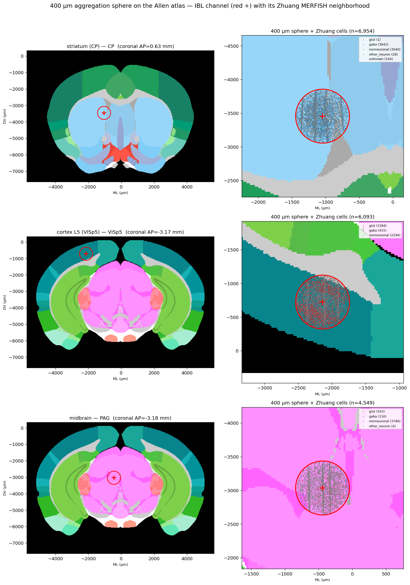
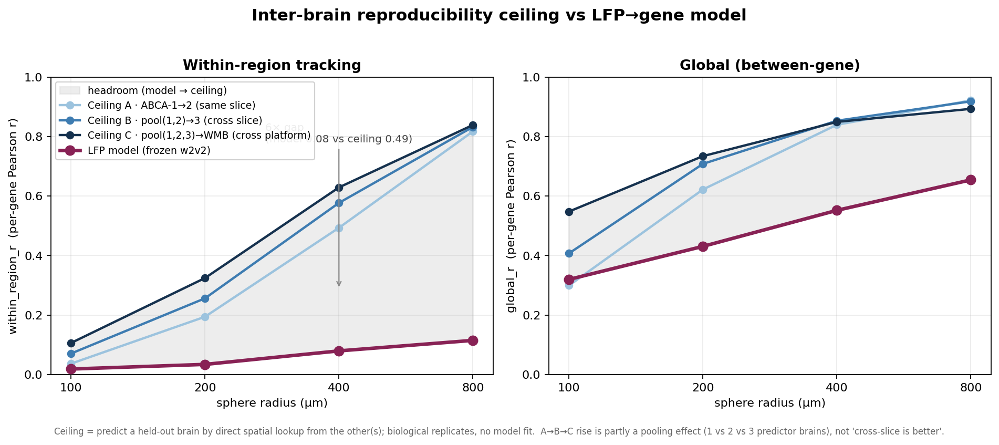

Decoding local gene expression and cell-type composition
from Neuropixels local field potentials
New York University
Local field potentials (LFP) recorded by Neuropixels probes are routinely treated as a coarse signal of population activity. We ask whether the LFP also carries a signature of the molecular composition of the tissue around each electrode. Using the Allen Common Coordinate Framework (CCFv3) as a bridge, we link IBL Brain-Wide-Map LFP channels to spatial transcriptomics (Zhuang and Allen WMB MERFISH) and train a small probe on frozen, self-supervised wav2vec2 embeddings of the LFP to predict the per-channel gene expression and cell-type composition within a 400 µm sphere.
Across 34 held-out animals, the model recovers the regional molecular signature strongly (which gene marks which region, r ≈ 0.96) but tracks within-region fine structure only weakly (r ≈ 0.18–0.24). To decide whether that gap is a data-noise limit or a model/modality limit, we measure an inter-brain ceiling: how well one biological replicate brain predicts another by direct atlas lookup. The within-region signal is highly reproducible across brains (ceiling 0.49–0.84), while the LFP model captures only ~16% of it — locating the bottleneck in the features/modality, not the ground truth.
The LFP side and the molecular side are never recorded in the same animal. We register both into CCFv3 and aggregate every MERFISH cell within a 400 µm sphere of each electrode's CCF location (the registration error, 150–250 µm, sets the finest usable radius).

400 µm aggregation sphere on real Allen atlas slices.
| Source | What | Scale |
|---|---|---|
| IBL BWM (LFP) | Neuropixels probes | 139 animals · 212K channels 34 held-out test |
| Zhuang MERFISH | 1,122-gene panel | 4 brains, left hemi (coronal + sagittal) |
| Allen WMB MERFISH | 550-gene panel | 1 brain, full · 59 coronal sections |
| Bridge | CCFv3 lookup | 400 µm sphere · 200 µm cubes |
CCF alignment verified: 54% region match, sub-10 µm offset. Both atlases share the Yao cell-type taxonomy; gene panels overlap on 477 shared genes.
The encoder is a wav2vec2 model pretrained self-supervised on LFP alone — it never sees coordinates, region labels, or cell types, so there is no leakage from the atlas into the features. We freeze it and train only a small MLP probe on its 768-d embeddings. The split is by animal (105 train+val / 34 test subjects), matching the localization model's held-out set, so reported numbers are subject-clean.
Two correlation axes — don't conflate them (Simpson's paradox). Pooling across genes inflates correlation. Between-gene (which gene marks which region) is the easy axis, r ≈ 0.96. Within-gene (one gene's spatial pattern, conditioned on gene identity) is the honest fine-scale number, r ≈ 0.18–0.24.
Held-out test pool (34 animals · ~33,633 channels · 75 sessions).
Is the weak within-region tracking a property of the data, or of the model? We answer with an inter-brain ceiling: predict one brain's gene field from another biological replicate by direct atlas lookup (no trained model). Three ceilings — same-slice (A), cross-slice (B), cross-platform (C) — across four aggregation radii.

Within-region gene signal is reproducible across brains (ceiling 0.49–0.84), but the LFP model reaches only ~0.08–0.12 — a ~6× gap at 400 µm. The bottleneck is the modality/features (LFP can't resolve sub-region position), not ground-truth noise. Headroom is real: AP-band features and joint training are the levers.
One brain drives everything. Pick a cube size and click a region on the 3D brain to update the three obs-vs-pred scatters (floor / model / ceiling) and the four reconstruction heatmaps — per gene, per CCF depth.
3D brain (grey = whole brain · colored = evaluable regions / probe coverage) + 3 obs-vs-pred scatters + 4 reconstruction heatmaps, all linked. Data is fetched per cube-size on demand; slimmed for fast loading. Best on a wide screen.
@misc{lu_lfp2gene,
title = {Lfp2Gene: Decoding local gene expression from Neuropixels LFP},
author = {Lu, Ping-Jung and others},
year = {2026},
note = {Work in progress}
}